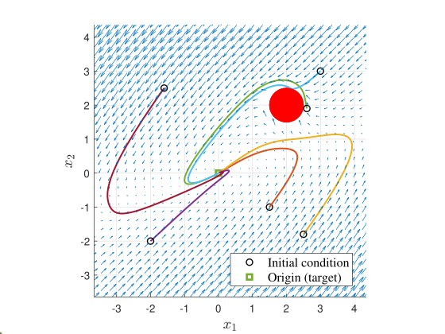
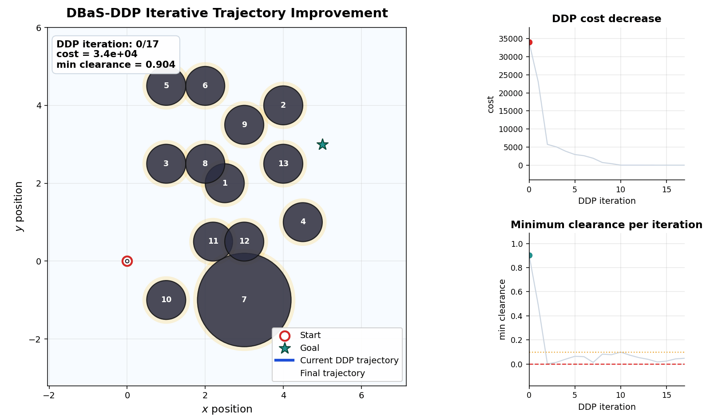
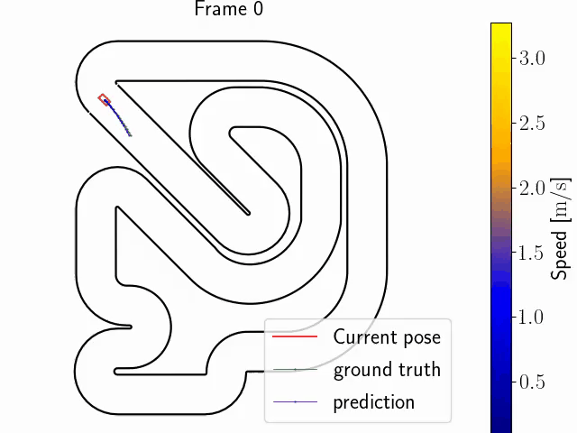

|
Research
The CORTx Lab develops control, optimization, and learning methods for autonomous systems operating under uncertainty, safety constraints, and changing environments. Our work lies at the intersection of safety-critical control, model predictive control, adaptive and learning-enabled decision making, and real-world autonomy for robotics and mobility systems. We are particularly interested in combining strong control-theoretic foundations with practical deployment in safety-critical settings, including autonomous driving, racing, off-road robotics, aerial systems, and robotic autonomy in uncertain environments. Core Research Thrusts
 Safety-Critical Control
We develop control-theoretic methods for enforcing safety in nonlinear constrained systems.
A central theme in our work is the design of safety-embedded control architectures, including barrier state (BaS) methods that integrate safety directly into system dynamics and feedback design.
Our research studies multi-objective safe control (stabilization, tracking, regulation, etc.), safe optimal control and nonlinear safe feedback synthesis with theoretical guarantees and scalable algorithms.
We are interested in both theory and computation: from new formulations for safe multi-objective control to practical algorithms for robotic autonomy in cluttered or uncertain environments.
 Trajectory Optimization and Model Predictive Control
We study optimization-based control and planning methods for autonomous systems operating under model uncertainty, disturbances, and safety constraints. Our work includes robust and safe trajectory optimization, MPC, sampling-based control, and differentiable optimization. A key objective is to design methods that remain computationally practical while improving robustness, safety, and performance in complex robotic environments.
 Learning and Data-driven Control
We develop learning-based, adaptive and data-driven control methods for systems whose dynamics, environments, or operating conditions change over time. Our interests include safe adaptive control, learning-enabled control under uncertainty, Gaussian-process-based safe control, and online adaptation in high-performance settings. Rather than treating learning as a black box, we aim to integrate adaptation and data-driven modeling with control structure, safety, and real-time decision making.
Current directions. Our current efforts include autonomous racing, off-road driving, F1/10 platforms, safety-critical learning and control, and control architectures for autonomous systems operating under uncertainty and changing environmental conditions. We are also interested in emerging directions at the intersection of control and modern AI, including control-theoretic foundations for AI-enabled systems and the use of AI, generative AI, and LLMs for safety-critical control, planning, and decision making. |